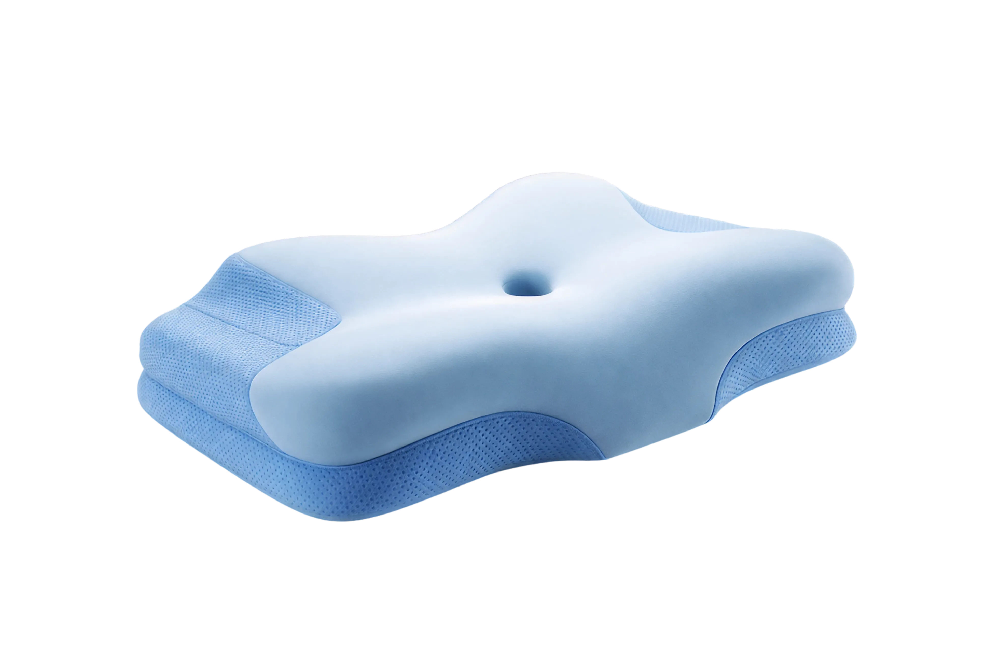
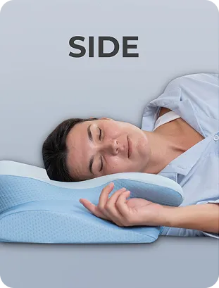
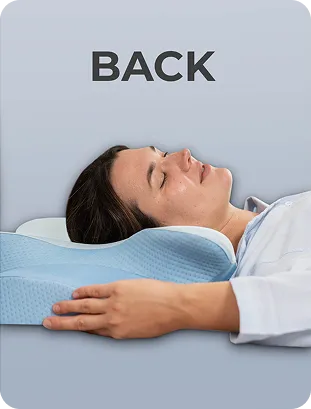
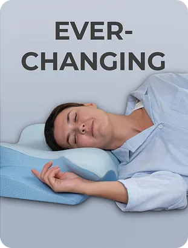

An exceptional experience! Always goes above and beyond. An exceptional experience! Always goes above and beyond.

Your pillow arrives vacuum packed. Once you open the PE bag, it will begin expanding
immediately. Allow it to expand fully before first use this typically takes 4 to 8
hours.
Leave it in a ventilated room and it will be ready by your next sleep.
Rest your head on the higher lobe of the pillow. The higher lobe fills the gap between your
shoulder and your ear, keeping your neck parallel to the mattress. Your spine should form a
straight horizontal line from your head to your hips.
Avoid pulling your knees too
high toward your chest as this can torque the lower spine.
Rest your head on the lower lobe of the pillow. The lower lobe cradles the natural curve of
your neck without pushing your head too far forward.
Your chin should not be pressed
toward your chest. If it is, you are using the wrong side of the pillow.
If you have been using a flat pillow for years, your neck muscles are conditioned to an incorrect position. Switching to proper cervical support will feel different — and for some people, mildly uncomfortable — in the first 5 to 14 days. This is normal. Your muscles are adapting to correct alignment. Push through this period. The discomfort resolves and what replaces it is noticeably less morning pain.



Side sleeping is the most common and generally the best position for spinal health. Use
the higher lobe. Keep your arms relaxed — not tucked under the pillow and not stretched
straight out.
A pillow between your knees reduces lateral rotation of the hips
and takes pressure off the lower back.
Back sleeping allows the spine to decompress naturally. Use the lower lobe. Avoid placing
extra pillows under your head — additional height pushes the cervical spine into
flexion.
If you experience lower back discomfort while back sleeping, place a
pillow under your knees.
Stomach sleeping forces the neck to rotate 90 degrees to the side for hours at a time. No
pillow can fully offset the spinal strain this creates. If you are a habitual stomach
sleeper, transition to side sleeping gradually.
Start by placing a body pillow
alongside you to prevent rolling to your stomach.
Side sleeping is the most common and generally the best position for spinal health. Use
the higher lobe. Keep your arms relaxed — not tucked under the pillow and not stretched
straight out.
A pillow between your knees reduces lateral rotation of the hips
and takes pressure off the lower back.
Back sleeping allows the spine to decompress naturally. Use the lower lobe. Avoid placing
extra pillows under your head — additional height pushes the cervical spine into
flexion.
If you experience lower back discomfort while back sleeping, place a
pillow under your knees.
Stomach sleeping forces the neck to rotate 90 degrees to the side for hours at a time. No
pillow can fully offset the spinal strain this creates. If you are a habitual stomach
sleeper, transition to side sleeping gradually.
Start by placing a body pillow
alongside you to prevent rolling to your stomach.
Body temperature naturally drops as you fall asleep and continues to drop through the night. A
pillow that traps heat disrupts this process — you wake up warm, uncomfortable, and in lighter
sleep stages.
The Dr.Prime pillow uses a 90% Nylon 10% Spandex cooling stretch fabric on
the top surface. This fabric draws heat and moisture away from your head and neck rather than
trapping it. The result is a consistently cooler sleep surface throughout the night.
To
further support temperature regulation:
Remove the cover by unzipping it. Machine wash on a gentle cold or warm cycle with mild detergent. No bleach. No fabric softener. Air dry flat or tumble dry on low heat only. Do not iron. The Nylon Spandex fabric will be damaged by high heat.
Do not machine wash the foam core. Spot clean only using a damp cloth. Allow to air dry completely before reassembling.
Wash the cover every 2 to 4 weeks as part of your regular bedding routine. More frequently if you sweat heavily during sleep or if you have been ill.
Remove the cover and leave the foam in a well ventilated area for a few hours.
Phone and laptop screens held below eye level force the head forward and down — a position known as forward head posture that adds enormous mechanical stress to the cervical spine. Keep screens at or slightly below eye level throughout the day.
Monitor top should be at eye level. Chair back should support the lumbar curve. Arms should be at approximately 90 degrees when typing. If you work at a desk for 6 to 8 hours daily, your setup is one of the most important factors in your neck health.
Spend 5 minutes at the end of each day doing gentle neck stretches before sleep. Slow lateral tilts, chin tucks, and shoulder rolls release the accumulated tension from the day and allow your muscles to fully relax during sleep.
With proper care, the Dr.Prime pillow provides optimal support for 3 to 5 years. When it begins to show permanent sagging or no longer recovers its shape, it is time to replace it. A flattened support pillow is doing nothing for your alignment.